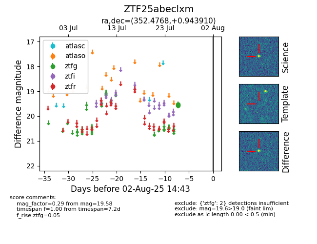

Target ZTF25abeclxm at 2025-08-02 14:43, see:
FINK: fink-portal.org/ZTF25abeclxm
Lasair: lasair-ztf.lsst.ac.uk/objects/ZTF25abeclxm
ALeRCE: alerce.online/object/ZTF25abeclxm
alt names
ZTF25abeclxm (ztf,fink)
coordinates:
equatorial (ra, dec) = (352.4768,+0.94391)
galactic (l, b) = (84.7004,-55.75496)
photometry
last ztfg=19.58
2 ztfg detections
